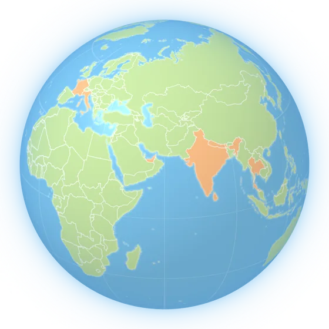
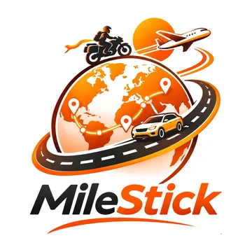

Record with GPS
Start recording and ride. MileStick keeps your route and checks the distance itself.
- Route, distance, time and altitude
- Counts toward verified kilometres and badges
- Travel mode, photos and your story
Track your journeys, showcase the places you've explored, celebrate your achievements and connect with travellers who share your passion.
In early access on Android
Celebrate every country, state and place you've reached, on a globe that grows with you.
Meet riders and travellers, follow each other, chat, ride together and share the moment.
Open other travellers' profiles and globes, and find your next destination in their journeys.
Every country you've visited lights up. Every place you've been gets a marker: your own photo where you have one, an orange pin where you don't. Spin it, zoom in, and watch nearby places separate into their own stories.

Pin a snap to its place and it appears right there on your globe. Take another there later and you choose whether to replace it.
Journeys you recorded and trips you added by hand both light up your countries, states and places.
Tap a traveller's footprint on their profile and spin through where they've been.
Globe drawn by the MileStick app's own globe renderer. Places, photos and figures are illustrative.
Your profile is your travel story at a glance: where you've been, how far you've gone, and the moments you want to remember.
Example profile: name, figures and photos are illustrative.
Discover riders and travellers, follow the ones you click with, and once you follow each other, keep the conversation going.
Search by username, see who's on the road, and open their profile and globe.
Chats open between people who follow each other, so your inbox stays personal.
Plan a ride, invite friends and share your location only while riding, with an SOS alert for the group if something goes wrong.
Tap the camera and send what you're seeing to friends. Each snap opens once, within a day.
Record a journey as you go, or add a trip you've already made from its start and destination. Both become part of your story, and MileStick is clear about which distances are verified.
Start recording and ride. MileStick keeps your route and checks the distance itself.
Pick where you started and where you went, the date and how you travelled. No battery drain.
Ride with GPS, or add a trip you've already made.
Places light up, kilometres add up, badges unlock.
Share your globe, follow travellers, ride together.

Start building your travel story with MileStick. Early access on Android opens in small groups.
The early-access sign-up form is being set up and will open here soon.